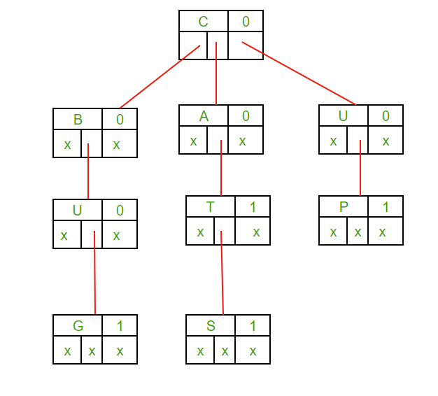

Project 3: Word Completion and Suggestion System
We’re developing a system that suggests and completes words based on user input, similar to how search engines do it. This makes typing faster and more intuitive.
Ternary Search Tree (TST): To Store a Dictionary of Words and Enable Fast Prefix Searches
What it is: A Ternary Search Tree is a type of search tree used to store a dynamic set or associative array where the keys are usually strings.
Why TST: TSTs allow efficient storage and querying of words, making them ideal for applications like autocomplete and spell-checking.
Pros and Cons:
- Pros: Fast lookups and insertions; space-efficient for storing prefixes; combines advantages of tries and binary search trees.
- Cons: Can be more complex to implement; requires balancing to maintain efficiency.
GitHub Link: Example TST Implementation
References: IEEE Transactions on Knowledge and Data Engineering
Binary Search Trees (BST): To Maintain and Query Frequently Used Words
What it is: A Binary Search Tree is a data structure in which each node has at most two children, referred to as the left child and the right child.
Why BST: BSTs help in efficiently maintaining and querying frequently used words, allowing quick lookups and updates.

Pros and Cons:
- Pros: Provides ordered data; supports efficient insertion, deletion, and lookup operations.
- Cons: Performance can degrade to \( O(n) \) in the worst case; requires balancing for optimal performance.
GitHub Link: Example BST Implementation
References: IEEE Transactions on Software Engineering
Auto-Suggestions Algorithm: To Implement the Autocomplete Functionality
What it is: An auto-suggestions algorithm generates possible completions for a given input based on a predefined dictionary or dataset.
Why Autocomplete: Autocomplete algorithms enhance user experience by predicting and suggesting possible completions, saving time and effort.
Levenshtein Automata:Levenshtein automata are used to quickly correct strings and perform fuzzy searches of words in a dictionary. The Levenshtein distance is a text similarity measure that compares two words and returns a numeric value representing the distance between them. The distance reflects the total number of single-character edits required to transform one word into another
Reference:Levenshtein